9 Linear Regression Modeling With SPSS, Part 1: Introduction
Statistics: A subject which most statisticians find difficult but which many physicians are experts on. – Stephen Senn, Statistical Issues in Drug Development, p. 4
9.1 Overview
This chapter covers the relationships among zero-order correlations, partial and semipartial correlations, and linear regression before exploring and interpreting the results of linear regressions conducted on adolescent executive-functioning data.
9.2 Core Concepts
9.2.1 Linear Relationships
Very few relationships in healthcare are truly linear. There are often sweet spots in how much care to provide or which types of care to provide, as well as diminishing returns, increasing returns, thresholds, and other nonlinear patterns. This is true well beyond the physical sciences; even the relationship of intelligence with income and wealth appears to show diminishing returns.
Nevertheless, it is often reasonable to begin by modeling a relationship as linear. A linear model may account for a useful proportion of the association while remaining relatively straightforward to estimate and interpret. Even when a relationship is suspected to be nonlinear, a linear model can provide a useful baseline. A later nonlinear model can then be evaluated according to whether it meaningfully improves fit beyond that baseline.
9.3 Introduction to Linear Regression Models
Correlation and linear regression are closely related tools for describing linear associations between variables.
A correlation is symmetric: The correlation between (X) and (Y) is the same as the correlation between (Y) and (X). Neither variable is formally designated as the outcome.
A regression is asymmetric in its formulation: One variable is designated as the outcome, and one or more others are designated as predictors. This allows the model to estimate expected differences in the outcome associated with differences in the predictors. This designation does not, by itself, establish that the predictors cause the outcome.
Linear regression also allows more complex models containing several predictors, interactions, nonlinear terms, and other extensions.
Throughout this tutorial, we will use a subset of variables from the Add Health study, which collected “rich demographic, social, familial, behavioral, psychosocial, cognitive, and health survey data” for more than 20,000 people across five waves from 1995 to 2018.
It is also worth investigating because its website now bears the mark of MAGA, stating that “[o]n March 31, 2025, as a sponsor of this project, NIH requested that the following language be added to this website: This repository is under review for potential modification in compliance with Administration directives.”
{kind=link}
I have preserved some of the data here. We will use those data with SPSS version 31. More information about accessing SPSS through CUNY’s Apporto service is provided in Section 16.2.1.
9.3.1 Correlation vs. Simple Linear Regression
Let us begin by comparing a simple linear regression with a zero-order correlation containing the same two variables.
A simple linear regression contains one predictor. When that predictor represents two groups, the model is also closely related to an independent-samples (t)-test and a one-way ANOVA.
The Add Health data are in long format, so first subset them to the first wave, meaning the first occasion on which data were collected.
With the add_health.sav file open in SPSS:
- From any window, click
Data > Select Cases.... - In the dialogue that opens, click the radio button next to
If condition is satisfied, and then click theIf...button immediately below it. - Choose
Wavefrom the list on the left and click the arrow button () to move it to the field on the right. - Either type
= 1or use the buttons to construct the condition.1 - Click
Continueand thenOK.
Leave Filter out unselected cases selected under Options in the main dialogue. This flags the unwanted rows without deleting or permanently changing them. Copy selected cases to a new dataset and Delete unselected cases alter the active data more substantially. I prefer to preserve the original data whenever practical so that the selection process remains reversible and reproducible.
After doing this, two changes will be visible in the Data Editor.
First, in the Data View tab, rows for which Wave is not 1 will have a line drawn through their row numbers:
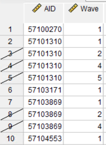
Second, in the Variable View tab, a new filter_$ variable will appear at the end of the data.2 Its Label summarizes the selection condition: Wave = 1 (FILTER). This variable defines which rows are filtered. Deleting it removes the filter.
Correlation
With the
add_health.savfile open and filtered toWave = 1, chooseAnalyzefrom the menu bar and clickCorrelate > Bivariate.3Select Participated in DBT [
DBT] and Ball Executive Functions Slope – Student Self-Report [All_EFs_SR_Slope] and add them to theVariablesfield.- This is a point-biserial correlation, meaning a correlation between a dichotomous variable and a continuous variable. The point-biserial correlation is calculated using the same formula as Pearson’s correlation, so select, or leave selected,
PearsonunderCorrelation Coefficients. - Leave
Two-tailedselected underTest of Significance. The overall Type I error rate is set to (=.05). In a two-sided test, the rejection region is divided between the two tails of the sampling distribution, with .025 in each tail. The two-sided (p)-value reported by SPSS is nevertheless compared directly with the overall (=.05), not with .025. - Under
Options, selectMeans and standard deviations.
- This is a point-biserial correlation, meaning a correlation between a dichotomous variable and a continuous variable. The point-biserial correlation is calculated using the same formula as Pearson’s correlation, so select, or leave selected,
For this two-variable correlation, pairwise and listwise exclusion will ordinarily produce the same result because only two variables are included. In a larger correlation matrix, pairwise exclusion can preserve more observations for each separate correlation, but it can also cause different correlations to be based on different subsets of participants. That can complicate comparisons among the coefficients.
In the
Descriptive Statisticstable in theOutputwindow, the mean forDBTis .19. BecauseDBTis coded1for participation and0for nonparticipation, its mean is also the proportion of students who participated: 19%.In the
Correlationstable, the point-biserial correlation betweenDBTandAll_EFs_SR_Slopeis (-.165).
This indicates a small negative association: DBT participation was associated with more negative executive-function slopes. Because more negative slopes represent greater improvement here, students who participated in DBT tended to show greater improvement.
The correlation coefficient itself should not be interpreted as the raw difference between the two groups. The raw group difference is given by the unstandardized regression coefficient when DBT is entered as a 0/1 predictor. In a simple regression, the standardized regression coefficient will equal the point-biserial correlation.
The Sig. (2-tailed) value is (p=.003). Because .003 is below the overall (=.05), the association is statistically significant.
This could be reported as:
DBT participation was significantly associated with changes in total executive-function scores, (r_{pb}=-.165), (p=.003), with participants in the DBT program showing more negative slopes and therefore greater improvement.
The degrees of freedom for a Pearson or point-biserial correlation are:
\[df=N-2\]
Thus, (df=326) would imply (N=328). The correlation and corresponding simple regression should use the same analytic sample. If SPSS reports substantially different sample sizes for them, check the active filter and missing-data settings before comparing the results.
The substantive interpretation is stated in relatively plain language, while the numerical statistics provide the evidence supporting that interpretation.
Linear Regression
Pearson’s correlation is calculated as:
\[r_{XY} = \frac{\operatorname{Cov}(X,Y)}{s_Xs_Y} = \frac{\operatorname{Cov}(X,Y)}{\sqrt{\operatorname{Var}(X)\operatorname{Var}(Y)}}\]
The covariance indicates how the variables vary together. Dividing by their standard deviations places the relationship on a standardized scale ranging from (-1) to (1).
A simple linear regression is written as:
\[Y_i=\beta_0+\beta_1X_i+\varepsilon_i\]
where:
- (Y_i) is the observed outcome for participant (i)
- (_0) is the intercept
- (_1) is the slope
- (X_i) is the predictor value for participant (i)
- (_i) is the model error for participant (i)
The fitted model produces a predicted outcome:
\[\widehat{Y}_i=b_0+b_1X_i\]
The residual is:
\[e_i=Y_i-\widehat{Y}_i\]
Thus, a residual is the vertical difference between an observed outcome and the value predicted by the regression line. It represents outcome variation not accounted for by the model.
Ordinary least squares selects the intercept and slope that minimize the sum of squared residuals:
\[\sum_{i=1}^{N}e_i^2\]
The residual is not the distance of an (X) value from the regression line, nor is regression based on the assumption that error “comes from” the predictor. Instead, the model represents unexplained variability in the outcome conditional on the predictors.
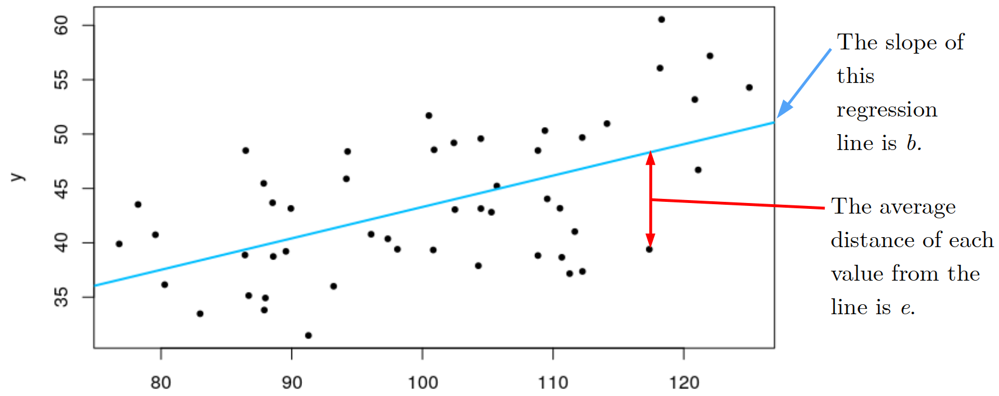
Regression and correlation are closely connected, but they emphasize different aspects of the relationship. Correlation provides a symmetric standardized association, whereas regression explicitly models an expected outcome from one or more predictors.
In whichever SPSS window is active, click
Analyze > Regression > Linear....Add
ZAll_EFs_SR_Slopeto theDependentfield andDBTto theIndependent(s)field. SPSS uses the labelsDependentandIndependent(s), corresponding broadly to the terms outcome and predictor.Under
Statistics, select:EstimatesConfidence intervalsModel fitPart and partial correlationsDescriptives
Leave R squared change unselected for now.
Casewise diagnostics can identify observations with unusually large residuals. These observations may warrant investigation, although a large residual does not automatically mean a case should be removed.
Durbin-Watson assesses serial correlation in ordered residuals. A value near 2 suggests little first-order autocorrelation, whereas values approaching 0 or 4 suggest positive or negative autocorrelation, respectively. This test is particularly relevant to time-ordered data. It does not, by itself, diagnose every form of dependence or determine whether a multilevel model is needed.
- Under
Options, useExclude cases listwisefor the regression.
Listwise exclusion ensures that all coefficients in the fitted model are based on the same set of observations. Pairwise exclusion can construct the model from correlations or covariances based on different subsets of participants, which may produce a less coherent analysis.
Neither listwise nor pairwise deletion eliminates bias when data are not missing completely at random. If missingness is appreciable, multiple imputation or another principled missing-data approach should be considered.
Do not use Replace with mean as a routine solution. Single mean imputation artificially reduces variance, distorts correlations and regression coefficients, and understates uncertainty.
The default Stepping Method Criteria do not matter here because no automated entry or removal method is being used.
Leave Include constant in equation selected. The constant is the intercept. It should ordinarily remain in the model regardless of whether the predictors or outcome have been standardized. With standardized predictors, zero represents the sample mean, which often makes the intercept more interpretable.
Removing the intercept would force the expected outcome to equal zero whenever all predictors equal zero. That restriction requires a specific substantive or design-based justification.
- Leave the
Methodset toEnter. Other entry and removal methods will be discussed later.
In the Descriptive Statistics table in the Output window, the mean for Zscore: All Executive Functions Slope -- Student Self-Report is approximately 0, and its standard deviation is approximately 1, as expected for a standardized variable.4
The mean for Participation in DBT Program? is .19. Because this is a dummy variable, 19% of participants in the analytic sample were coded 1 and therefore participated in DBT.
The sample size displayed here should match the sample size used for the correlation if the same filter and missing-data rules were applied. If the correlation reports (df=326), its sample size is 328; a regression sample size of 670 would indicate that the two analyses were conducted on different cases.
After the Variables Entered/Removed table, SPSS presents the Model Summary table. This table describes the overall performance of the model.
One way to think about ordinary least-squares regression is that the model attempts to account for outcome variation while minimizing the residual variation left unexplained.
In SPSS, (R) is the nonnegative correlation between the observed outcome values and the values predicted by the model. In a simple regression containing an intercept:
\[R=|r_{XY}|\]
Thus, an (R) of .165 is the absolute value of the zero-order correlation between DBT and ZAll_EFs_SR_Slope.
This is an exact algebraic relationship when the correlation and regression use the same observations and coding; it is not merely an approximation that becomes closer as the sample increases.
The R Square value is:
\[R^2 = 1- \frac{SS_{\text{residual}}}{SS_{\text{total}}}\]
It represents the proportion of observed outcome variance accounted for by the model.
In a simple regression:
\[R^2=r^2\]
Thus:
\[.165^2\approx.027\]
The model accounts for approximately 2.7% of the observed variance in executive-function slopes.
Lowercase (r^2) is commonly used for the squared association between two variables. Capital (R^2) refers to the proportion of outcome variance accounted for by the full model.
The intercept is necessary for defining the fitted regression surface, but it is not ordinarily described as contributing a separate portion of the variance represented by (R^2).
Adjusted R Square adjusts (R^2) according to the sample size and number of predictors:
\[R_{\text{adjusted}}^2 = 1-(1-R^2)\frac{N-1}{N-p-1}\]
where (p) is the number of predictors, excluding the intercept.
Adjusted (R^2) penalizes the addition of predictors that contribute little relative to the complexity they add. It can be useful when comparing models with different numbers of predictors, provided that the models use the same outcome and analytic sample. It does not directly measure external validity or guarantee that the model will generalize to another population.
The next table is labeled ANOVA. Its presence emphasizes the close relationship between ANOVA and regression.
The Regression sum of squares is the amount of outcome variation accounted for by the complete model relative to an intercept-only model. It is not the sum of squares for cases in which DBT = 1.
The Residual sum of squares is the outcome variation left unexplained by the model.
The (F)-test evaluates:
\[H_0:\beta_1=0\]
In a simple regression, this is equivalent to testing whether the point-biserial correlation is zero and whether the two group means differ.
With one predictor:
\[F=t^2\]
The regression, independent-samples (t)-test, and one-way ANOVA are therefore alternative parameterizations of the same two-group comparison when they use the same observations and assumptions.
One reason to prefer regression is its flexibility. Additional predictors, interaction terms, polynomial terms, and other extensions can be added within the same general framework. If a one-way ANOVA answers the research question adequately, however, there is nothing wrong with using it. ANOVA source tables may also be more familiar to some audiences.
Two broader lessons are especially relevant:
Assumptions matter.
Important considerations include linearity of the modeled association, independence of observations or residuals, homoscedasticity, influential observations, and the approximate normality of residuals for small-sample inference.
The importance of particular assumptions varies with the model, design, and sample size. Large samples can make statistical tests less sensitive to modest departures from residual normality, but they do not correct sampling bias, dependence, poor measurement, omitted confounding, or model misspecification.
Many statistical procedures belong to related modeling families.
Correlation, ANOVA, and ordinary least-squares regression are especially closely connected and can often be expressed as forms of the general linear model.
Logistic regression, multilevel models, and structural equation models share broader principles of parameter estimation, model comparison, and partitioning explained from unexplained information, but they do not all estimate the same kind of outcome, use ordinary least squares, or partition variance in precisely the same way.
The goal of comparing a one-way ANOVA, zero-order correlation, and simple regression is to show both their exact mathematical connections and the different ways in which they frame the same basic association.
Semipartial Correlation vs. Multiple Linear Regression
Recall from Section 6.3 that a semipartial correlation removes the linear association of a third variable from one of the two variables being correlated.5
This idea is central to multiple regression. The coefficient for each predictor is estimated while accounting for the other predictors included in the model.
Consider:
\[Y_i=b_0+b_1X_i+b_2Z_i+e_i\]
where:
- is the outcome
- is the predictor of primary interest
- is a control variable or additional predictor
- (b_1) is the coefficient for (X), conditional on (Z)
The coefficient (b_1) estimates the expected difference in (Y) associated with a one-unit difference in (X) among observations with the same modeled value of (Z).
This is commonly described as “holding (Z) constant.” The regression does not literally match participants into groups with identical values of (Z); it estimates the conditional relationship specified by the model.
A simple regression is:
\[Y_i=b_0+b_1X_i+e_i\]
Here, (b_1) describes the unadjusted association between (X) and (Y). If (X) is correlated with another relevant variable, (Z), the simple association may partly reflect variation shared with (Z).
A multiple regression adds (Z):
\[Y_i=b_0+b_1X_i+b_2Z_i+e_i\]
Now (b_1) estimates the association between (X) and (Y) conditional on (Z).
The mathematical connection can be demonstrated through residualization.
First, regress (X) on (Z):
\[X_i=a_0+a_1Z_i+r_{Xi}\]
The residual (r_{Xi}) is the portion of (X) not linearly predictable from (Z).
Second, regress (Y) on (Z):
\[Y_i=c_0+c_1Z_i+r_{Yi}\]
The residual (r_{Yi}) is the portion of (Y) not linearly predictable from (Z).
Then regress the residualized outcome on the residualized predictor:
\[r_{Yi}=b_1r_{Xi}+u_i\]
The resulting slope is the same coefficient obtained for (X) in the full multiple regression:
\[Y_i=b_0+b_1X_i+b_2Z_i+e_i\]
This equivalence is known as the Frisch-Waugh-Lovell theorem.
A partial correlation removes (Z) from both (X) and (Y):
\[r_{YX\cdot Z} = \operatorname{Cor}(r_X,r_Y)\]
A semipartial correlation, also called a part correlation, removes (Z) from (X) but not from (Y):
\[r_{Y(X\cdot Z)} = \operatorname{Cor}(Y,r_X)\]
The squared semipartial correlation represents the unique increase in (R^2) associated with adding that predictor after the other predictors are already in the model.
The standardized regression coefficient, partial correlation, and semipartial correlation are related but are not generally identical.
In SPSS:
Betais the standardized regression coefficient.Partialis the partial correlation.Partis the semipartial correlation.
In a simple regression, the standardized coefficient equals the zero-order correlation. That special equivalence does not generally persist after additional predictors are added.
For example:
\[\text{Academic Performance} = b_0 + b_1(\text{Resilience}) + b_2(\text{SES}) +e\]
The coefficient (b_1) estimates the association between resilience and academic performance conditional on socioeconomic status. It asks whether students who differ in resilience but have the same modeled level of socioeconomic status also differ in expected academic performance.
If two predictors are strongly correlated, their coefficients can change substantially when they are entered together. The direction and magnitude of those changes depend on how each predictor relates to the outcome and to the other predictor. Such changes can reflect confounding, suppression, shared predictive information, measurement error, or other model features. They should not automatically be described as mediation.
9.3.2 Conducting a Multiple Linear Regression Using Forward Term Selection
A multiple linear regression contains one outcome and two or more predictors. A multivariate regression, by contrast, models multiple outcomes simultaneously.
In SPSS, compute the correlation between
ZAll_EFs_SR_SlopeandAdult_Sister_at_Home, a dummy variable indicating whether the adolescent lived with a sister older than 18. The point-biserial correlation is (r_{pb}=-.11), (df=319), (p=.048). The association is small but statistically significant and, yes, was selected partly because it works for this example.Examine the correlations of
DBTwith bothZAll_EFs_SR_SlopeandAdult_Sister_at_Home.The zero-order correlation between
DBTandZAll_EFs_SR_Slopeis (-.165), and the association betweenDBTandAdult_Sister_at_Homeis (=.04).There is no strong theoretical reason to expect DBT participation to be associated with the presence of an adult sister in the home. The variable nevertheless provides a useful example of how coefficients change when correlated predictors are entered together.
Rerun the regression predicting
ZAll_EFs_SR_Slope, this time including bothDBTandAdult_Sister_at_Home.Go to
Analyze > Regression > Linear..., placeZAll_EFs_SR_Slopein theDependentfield, and place bothDBTandAdult_Sister_at_Homein theIndependent(s)field.Under
Statistics..., select:EstimatesModel fitR squared changeCollinearity diagnostics
Under
Options, leaveInclude constant in equationselected and useExclude cases listwise.Turn to the
Method:drop-down menu below theIndependent(s)field. SelectForward.Click
OK.
Results
Variables Entered/Removed and the Stepwise Strategy
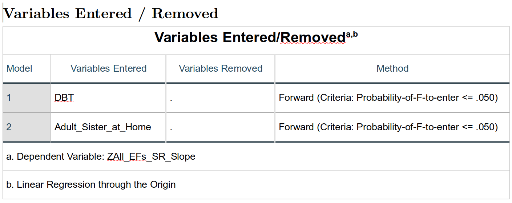
The Variables Entered/Removed table reports which variables entered the model under the selected method.
The goal of a theory-driven analysis is usually to specify predictors and their order based on the research question, study design, and prior evidence. Automated procedures such as Forward, Backward, and Stepwise instead allow features of the current sample to determine which predictors are retained.
Here, the only possible predictors are DBT and Adult_Sister_at_Home, so the consequences are limited and easy to inspect. In larger datasets, automated selection can produce unstable and sample-specific models.
Potential problems include:
- Small changes in the sample can change which predictors are selected.
- Coefficients and (R^2) may be biased upward.
- Conventional (p)-values and confidence intervals do not account for the selection process.
- Correlated predictors may be selected or omitted somewhat arbitrarily.
- A model selected in one sample may perform poorly in another.
Thus, forward selection is useful here as a demonstration of automated model building, but it should generally be treated as exploratory rather than as a reliable method for identifying the single “best” or “true” model.
SPSS offers five methods for entering or removing predictors:
Enter: Predictors in a block are entered simultaneously. Additional blocks can then be added in a prespecified order. This is usually the most theory-driven option because the investigator, rather than the observed (p)-values, decides which predictors belong in each model. This is the method I use nearly exclusively.Remove: Predictors in a specified block are removed simultaneously from a model that already contains them. This can be used to test whether deleting a theoretically defined block worsens model fit.Stepwise: SPSS begins with an intercept-only model. At each step, it evaluates predictors not yet in the model and adds the eligible predictor that best meets the entry criterion. It then reevaluates predictors already in the model and may remove those that no longer meet the retention criterion. A previously removed predictor can later reenter.The criteria are specified under
Options... > Stepping Method Criteria. They are commonly expressed as probabilities associated with (F)-tests for entry and removal.Forward: This resembles stepwise selection, but predictors are only added. Once entered, they are not removed.Backward: SPSS begins with all candidate predictors and removes those that fail the specified retention criterion.
Automated selection does not solve multicollinearity. When predictors are strongly correlated, a procedure may retain one and omit another, but the selected variable can depend on small sample-specific differences. A parsimonious selected model is not necessarily stable, unbiased, or theoretically meaningful.
Model Summary
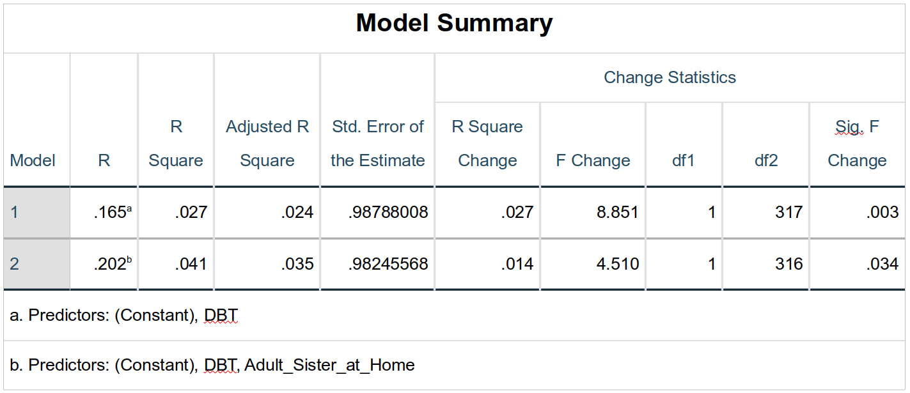
This table summarizes the performance of the overall model at each step.
For Model 1, which contains only DBT, (R=.165). Because this is a simple regression containing an intercept and using the same observations, (R) is exactly the absolute value of the zero-order correlation between DBT and ZAll_EFs_SR_Slope.
The corresponding (R^2) is .027, indicating that the model accounts for 2.7% of the observed variance in executive-function slopes.
Adjusted R Square adjusts (R^2) according to the number of predictors and the sample size. It does not include the error term as a counted predictor, and the intercept is not included in (p) in the usual adjusted-(R^2) formula.
Adjusted (R^2) is often useful when comparing models of different complexity, as long as they are fitted to the same outcome and analytic sample. It is not a direct measure of generalizability.
The Std. Error of the Estimate is the residual standard deviation, also called the root mean square error under the usual regression calculation. It is expressed in the units of the outcome and indicates the typical distance between observed and predicted values.
R Square Change represents the improvement in explained variance relative to the preceding model.
For Model 1, the preceding model is the intercept-only model. Thus, the first R Square Change is legitimately the increase from (R^2=0) in the intercept-only model to (R^2=.027) after adding DBT.
The corresponding F Change and Sig. F Change test whether that increase is greater than would be expected by sampling error.
Model 2 adds Adult_Sister_at_Home to the model already containing DBT.
The overall (R), (R^2), adjusted (R^2), and standard error of the estimate describe the complete two-predictor model. The change statistics evaluate the additional contribution of Adult_Sister_at_Home.
The increase is:
\[\Delta R^2=.041-.027=.014\]
Thus, Adult_Sister_at_Home accounts for an additional 1.4% of the observed outcome variance after DBT has already been entered.
This change is statistically significant:
\[F_{\text{change}}(1,316)=4.51,\quad p=.034\]
This means that the two-predictor model fits the observed data better than the model containing only DBT.
The result does not mean that the new predictor is necessarily important in a causal or practical sense. It means that it contributes statistically detectable predictive information in this sample after adjustment for DBT.
ANOVA Table
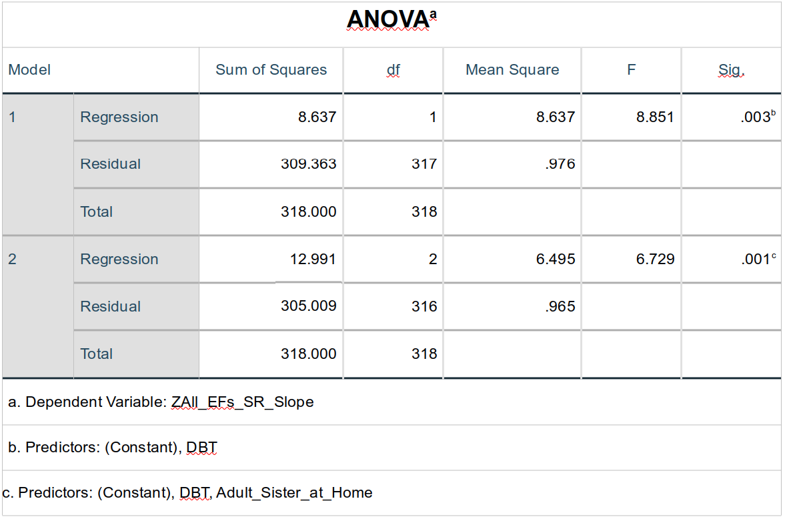
The ANOVA table evaluates the complete model at each step against an intercept-only model.
It does not test each predictor separately. In Model 2, for example, the (F)-test evaluates the joint null hypothesis:
\[H_0:\beta_{\text{DBT}}=\beta_{\text{Adult Sister}}=0\]
The individual predictors are evaluated in the Coefficients table, while the incremental contribution of the newly entered predictor is evaluated by the (R^2)-change test.
Coefficients
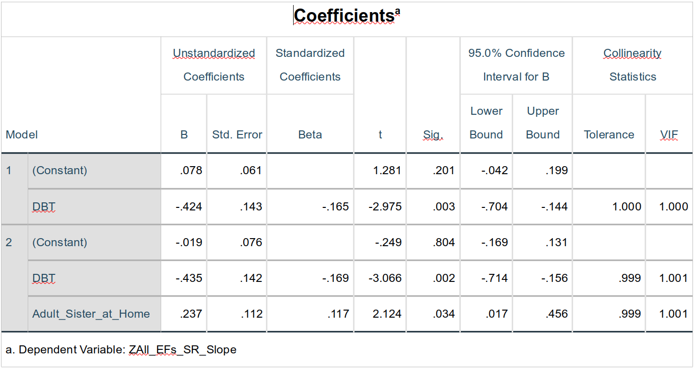
The Coefficients table evaluates the individual model terms.
The unstandardized coefficient for a binary predictor coded 0 and 1 is directly interpretable as an adjusted difference between the two groups. Binary predictors thus have meaningful unstandardized coefficients.
Because ZAll_EFs_SR_Slope is standardized, an unstandardized coefficient for DBT represents the difference between the DBT and non-DBT groups in outcome standard-deviation units.
The intercept is the expected outcome when all predictors equal zero. In Model 1, it is the expected standardized executive-function slope among students with DBT = 0. Its (p)-value tests whether that expected value differs from zero.
The intercept test does not test whether DBT participants differ from nonparticipants. That difference is tested by the DBT coefficient.
In the simple first model, the standardized Beta for DBT equals its zero-order correlation with the outcome:
\[\beta = r = -.165\]
After Adult_Sister_at_Home is added, the Beta for DBT becomes an adjusted standardized regression coefficient. It is not the semipartial correlation.
The Part column contains the semipartial correlation, and the Partial column contains the partial correlation.
Compare the zero-order, partial, part, and standardized coefficients to understand how adjustment changes the estimated relationship. A modest change indicates that the added predictor shares some information with the predictor and outcome but does not radically alter the association.
A change in a coefficient does not establish mediation. It may reflect confounding, suppression, shared predictive variation, measurement error, or another feature of the model. Mediation requires a theoretically plausible causal sequence and explicit estimation of an indirect pathway.
The Collinearity Statistics columns report tolerance and the variance inflation factor:
\[\text{Tolerance}_j = 1 - R_j^2\]
where (R_j^2) is obtained by predicting predictor (j) from the other predictors.
The variance inflation factor is:
\[\text{VIF}_j = \frac{1}{\text{Tolerance}_j}\]
Toleranceranges from 0 to 1. Lower values indicate that more of the predictor is linearly predictable from the other predictors.VIFbegins at 1 and increases as collinearity increases. It represents how much the variance of a coefficient is inflated by linear relationships among the predictors.
Thresholds such as tolerance below .10 or VIF above 10 are common conventions rather than universal rules. Values above 5 may warrant attention in some contexts.
Collinearity is most important when it produces unstable coefficients, large standard errors, sensitivity to model specification, or difficulty separating the contributions of substantively overlapping predictors.
With one predictor, Model 1 has no predictor-to-predictor collinearity. In Model 2, the tolerance and VIF values indicate little linear redundancy between DBT and Adult_Sister_at_Home, as expected from their weak association of (=.04).
Excluded Variables
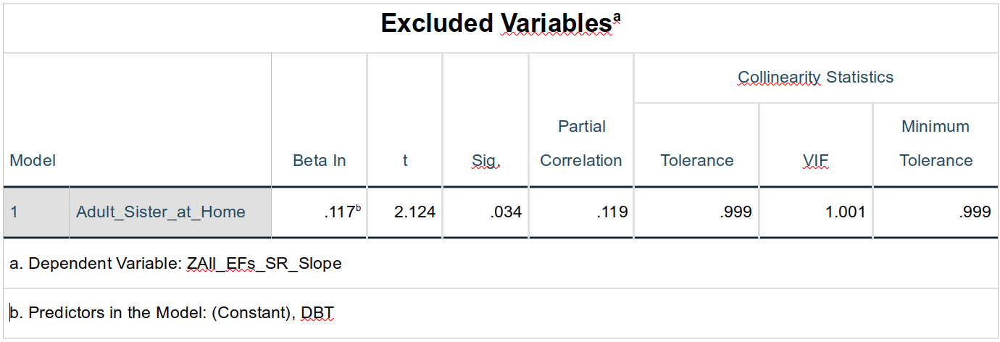
The Excluded Variables table reports statistics for candidate predictors not included at a given step. These statistics show what each excluded predictor would contribute if it were entered next, conditional on the predictors already in the model.
Because there are only two candidate predictors and both are eventually included, this table provides little additional information here.
In a larger automated-selection analysis, the table can help explain why a variable was not entered at a particular step. It should not be treated as a substitute for prespecified model comparison or validation.
Collinearity Diagnostics
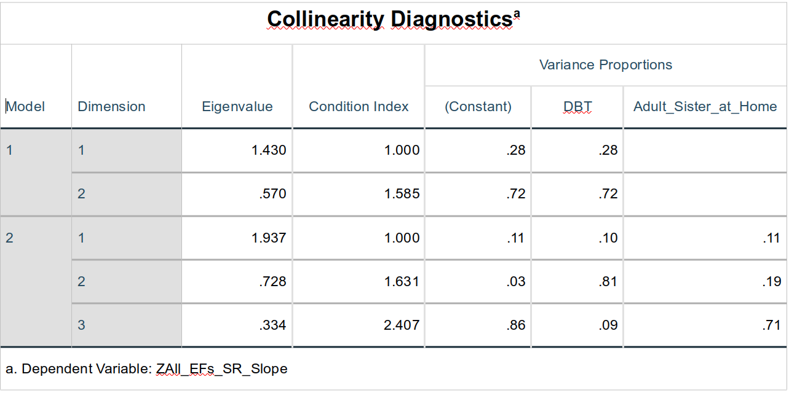
The Collinearity Diagnostics table provides additional information about near-linear dependencies among the predictors.
The Eigenvalue column reflects how much independent information is associated with each dimension of the predictor matrix. Very small eigenvalues approaching zero indicate dimensions containing little independent information and therefore potential collinearity.
The Condition Index is derived from the ratio between the largest eigenvalue and each dimension’s eigenvalue:
\[\text{Condition Index}_j = \sqrt{\frac{\lambda_{\max}}{\lambda_j}}\]
Common rough guidelines are:
- Values above approximately 15 may warrant attention.
- Values above approximately 30 may indicate serious collinearity.
These thresholds are not absolute.
A high condition index is most concerning when two or more predictors also have large variance proportions associated with the same dimension. The condition index should therefore be interpreted together with the variance proportions, tolerance, VIF, standard errors, and substantive relationships among the predictors.
10 Analyzing Residuals
10.1 Set Up Your Model
- Open the dataset in SPSS.
- Go to
Analyze > Regression > Linear. - Move the outcome into the
Dependentbox. - Move the predictor or predictors into the
Independent(s)box. - Click
PlotsandSave, following the steps below, and then clickOK.
10.1.1 Steps to Evaluate Residuals
Request Residual Plots
In the
Linear Regressiondialogue:- Click
Plots. - In the
Ybox, enterZRESID, representing standardized residuals. - In the
Xbox, enterZPRED, representing standardized predicted values. - Check
Histogram. - Check
Normal probability plot. - Click
Continue.
- Click
Save Residuals and Predicted Values
In the
Linear Regressiondialogue:Click
Save.Under
Predicted Values, check:UnstandardizedStandardized
Under
Residuals, check:UnstandardizedStandardizedStudentized
Optionally, under
Influence Statistics, check:Cook's distanceLeverage values
Click
Continue, and then clickOK.
10.1.2 Interpretation of Outputs
Histogram of Residuals
The histogram displays the distribution of residuals.
Residuals should often appear approximately symmetric and bell-shaped, particularly when the sample is small and conventional (t)- and (F)-based inference depends more heavily on the normality approximation.
Exact normality is not required for the least-squares coefficient estimates themselves to be unbiased. With large samples, modest departures from normality generally matter less for conventional inference.
Normal P-P Plot
SPSS produces a normal P-P plot in this dialogue.
If the residual distribution is approximately normal, the plotted points should generally follow the diagonal line.
Systematic departures from the line may indicate skewness, heavy tails, or other departures from normality.
Formal tests such as Shapiro-Wilk are not automatically more informative. In large samples, they can detect trivial departures from normality that have little practical consequence. Graphical assessment is often more useful.
Scatterplot of ZRESID vs. ZPRED
This plot helps assess linearity and homoscedasticity.
A reasonably specified linear model should produce a relatively random cloud of residuals centered around zero.
- Curvature may suggest that the modeled relationship is nonlinear.
- A funnel or fan shape may suggest heteroscedasticity.
- Clusters or bands may suggest omitted groups, discrete predictors, or other structure.
Studentized Residuals
Studentized residuals indicate how unusual an observed outcome is relative to its predicted value and estimated residual variability.
Values beyond approximately () deserve attention, and values beyond approximately () are more unusual.
A large residual does not necessarily mean that an observation is influential. Influence also depends on leverage.
Cook’s Distance
Cook’s distance summarizes how much the fitted model would change if an observation were removed.
A value above 1 is a traditional warning criterion. A smaller sample-dependent value such as:
\[\frac{4}{N}\]
can be used as an initial screening threshold.
Neither criterion should be used as an automatic deletion rule. Flagged observations should be investigated for data errors, unusual but valid characteristics, and sensitivity of the results.
Leverage Values
Leverage identifies observations with unusual combinations of predictor values.
Approximate screening criteria include:
\[\frac{2(p+1)}{N}\]
or:
\[\frac{3(p+1)}{N}\]
where (p) is the number of predictors.
An observation is most likely to be influential when it combines high leverage with a large residual.
10.1.3 Best-Practice Summary
| Assumption or Concern | Tool in SPSS | Interpretation |
|---|---|---|
| Linearity | Scatterplot of ZRESID vs. ZPRED |
Curvature may indicate that the linear form is inadequate |
| Homoscedasticity | Scatterplot of ZRESID vs. ZPRED |
A reasonably even vertical spread is desirable |
| Residual normality | Histogram and normal P-P plot | Approximate symmetry and adherence to the diagonal support the assumption |
| Unusual outcomes | Studentized residuals | Large absolute values identify observations poorly predicted by the model |
| Leverage | Leverage values | High values identify unusual combinations of predictors |
| Influence | Cook’s distance with residuals and leverage | Flagged cases warrant investigation and sensitivity analysis |
10.2 Multiple Linear Regression With Three Predictors Using Enter Term Selection
Now that there is, hopefully, some understanding of multiple linear regression, consider a slightly more complex model.
The three predictors are:
- DBT participation
- Economic distress
- Presence of an adult sister in the home
DBT participation and economic distress are mildly associated, with (=-.08). The statistical significance of that association should be taken directly from the relevant SPSS output and verified before being reported.
This analysis uses a more generally defensible method of building and comparing models.
Suppose the principal research question is whether DBT participation is associated with changes in executive functioning after accounting for other measured characteristics.
Economic distress and the presence of an adult sister are not the primary theoretical predictors here, but they can be entered first as covariates. DBT participation can then be added in a second block to test whether it explains additional outcome variance beyond that base model.
Analytic adjustment can help account for measured differences that were not controlled through the study design. It does not automatically eliminate confounding, and it cannot account for relevant variables that were not measured or included.6
The first model should be called the base model or reduced model, not the null model. A null model ordinarily contains only an intercept.
The second model tests whether adding DBT significantly improves fit beyond the base model.
Open the main linear-regression dialogue through
Analyze > Regression > Linear....Place
ZAll_EFs_SR_Slopein theDependentfield.Add
Economic_DistressandAdult_Sister_at_Hometo theIndependent(s)field.Change the
Method:toEnter.Click
Nextabove theIndependent(s)field. This creates a second block. AddDBTto the now-blankIndependent(s)field.In the
Statisticsdialogue, select:EstimatesModel fitR squared changeCollinearity diagnostics
In the
Optionsdialogue, leaveInclude constant in equationselected and useExclude cases listwise.Click
OK.
10.2.1 Results
Variables Entered/Removed
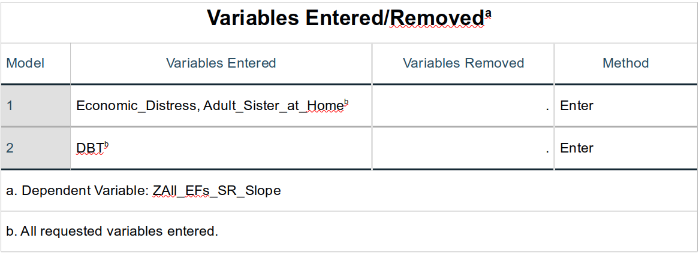
The Variables Entered/Removed table summarizes the two blocks and confirms that the Enter method was used.
The investigators, rather than an automated selection algorithm, determined which predictors entered and in which order.
Model Summary
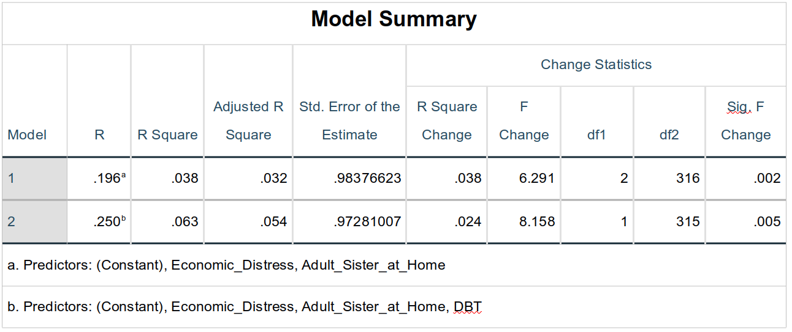
The first model contains Economic_Distress and Adult_Sister_at_Home. It accounts for a modest but statistically significant proportion of the observed variance in executive-function slopes.
The second model adds DBT.
Adding DBT increases the proportion of explained variance by 2.4 percentage points:
\[\Delta R^2=.024\]
This incremental contribution is statistically significant:
\[F_{\text{change}}(1,315)=8.16,\quad p=.005\]
Thus, DBT participation contributes additional predictive information beyond economic distress and the presence of an adult sister in the home.
This result supports an adjusted association between DBT participation and executive-function change. Causal language such as “DBT caused improvement” would require additional justification from the study design, including the process by which students entered the DBT program and the adequacy of control for alternative explanations.
ANOVA
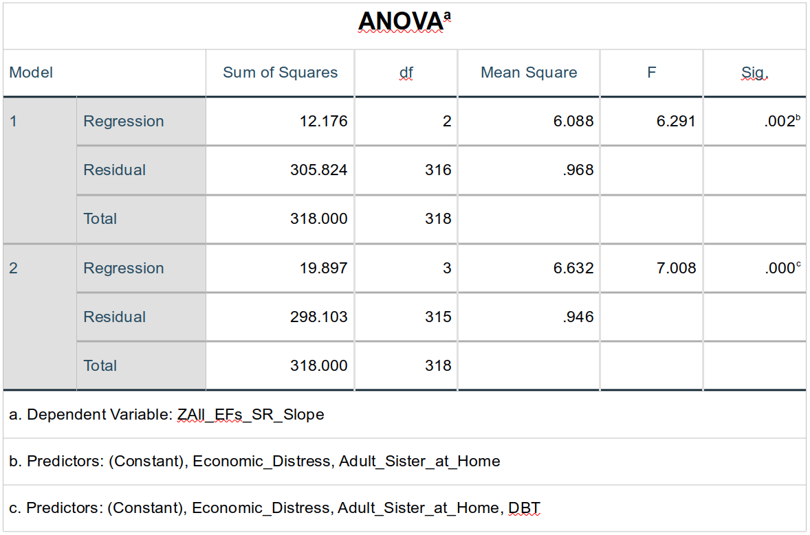
The ANOVA table tests each complete model against an intercept-only model.
For Model 2:
\[F(3,315) = 7.01,\quad p<.001\]
This indicates that the three predictors jointly account for statistically significant variation in ZAll_EFs_SR_Slope.
It does not mean that all three individual predictors are statistically significant. Their separate coefficients and tests appear in the Coefficients table.
Coefficients
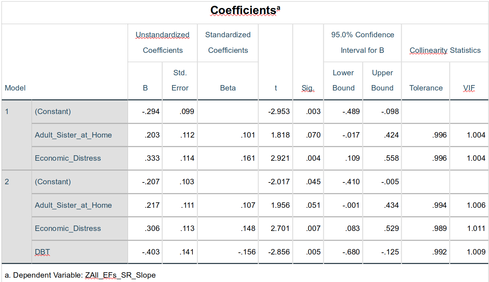
The Coefficients table shows how each predictor is associated with the outcome after adjustment for the other predictors in the same model.
The DBT coefficient in Model 2 represents the adjusted difference in standardized executive-function slopes between students who did and did not participate in DBT, conditional on economic distress and the presence of an adult sister in the home.
If the standardized Beta for DBT changes after the covariates are added, that change indicates that the variables share some information relevant to the outcome.
It does not establish that economic distress mediates the association between DBT and executive-function change.
Mediation would require:
- A theoretically plausible causal order
- Evidence that DBT influences the proposed mediator
- Evidence that the mediator influences the outcome
- Estimation of the indirect pathway
- Consideration of confounding in both component relationships
If economic distress preceded DBT participation, it is more plausibly treated as a possible confounder or prognostic covariate than as a mediator of DBT’s effect.
The collinearity statistics indicate whether the predictors are sufficiently redundant to destabilize their coefficients. Low VIFs suggest that the predictors are not strongly linearly predictable from one another.
Low collinearity does not mean that the variance shared by two predictors is necessarily associated with the outcome. It only indicates that the predictors retain substantial independent variation within the model.
Excluded Variables
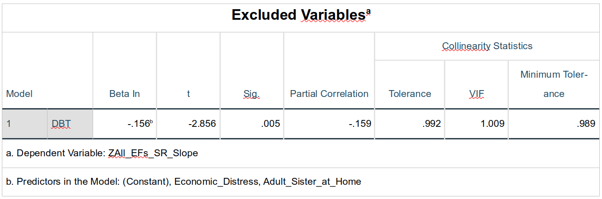
Because the Enter method was used, predictor inclusion was specified in advance rather than determined by an automated selection criterion.
The Excluded Variables table is therefore not central to interpreting this analysis.
Collinearity Diagnostics
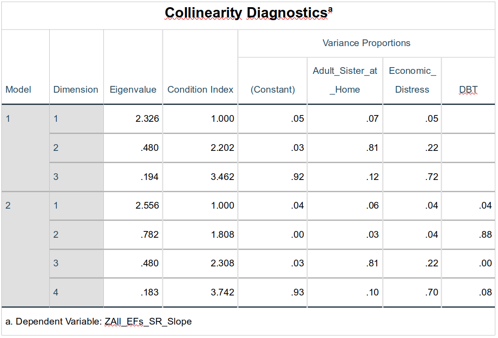
The collinearity among the three predictors is greater than in the earlier two-predictor model, but the diagnostic values indicate that it remains negligible.
Interpret this conclusion using the complete set of evidence:
- Tolerance
- VIF
- Condition indices
- Variance proportions
- Standard errors
- Stability of the coefficients across reasonable model specifications
No single threshold should determine whether a predictor is removed.
You can also type
Wave = 1directly. Choosing the variable from the list helps prevent typographical errors.↩︎It will also appear at the far right of the
Data Viewtab.↩︎In SPSS, one letter in each menu option is underlined. Once comfortable using the keyboard, you can hold
Altand type the underlined letters to navigate the menus. For this analysis, the sequence isAlt,A,C,B.↩︎The mean and standard deviation of a standardized variable may not be exactly 0 and 1 after filtering, listwise deletion, or rounding because the displayed subset may differ from the sample used when the variable was originally standardized.↩︎
The same principle can be extended to several control variables.↩︎
Design-based strategies include randomization, restriction, matching, and standardized measurement. Regression adjustment can account for measured covariates under the assumptions of the model, but it is not a substitute for successful randomization and cannot remove bias from unmeasured confounding.↩︎